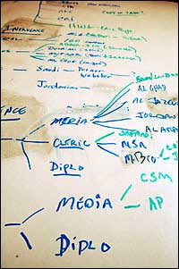

- Title Page
- Introduction
- A Newspaper with a Mandate
- Past Lessons
- First Facts
- Taking Stock
- Managing the Media
- Government Agencies
- Divvying up Tasks
- Voices of Experience
- Covering All Bases
- Sunday, January 8
- The Dam Breaks
- Loud or Soft?
- Arab Media
- A Videotape
- Next Steps
- Stressed Out
- Another Deadline
- Whom to Believe?
Covering All Bases
But for now, it was a frenzied waiting game. The frenzy reflected the Monitor’s efforts to be pro-active. The waiting was for contact from the kidnappers. The question of whom Carroll or her captors would most likely contact was a matter of speculation. Ingwerson discussed it with Foreign Editor Scott and the FBI agent. He also retained the private security firm AKE. AKE had its own intelligence capabilities, and could provide security and security analysis for newspapers and their correspondents. An AKE representative agreed with the Monitor staff and the FBI agent that the phone number Carroll probably would recall off the top of her head was that of Michael Farrell, the Middle East desk editor.

Whiteboard
© Christian Science Monitor
The FBI created a script for Farrell to stall the kidnappers if they called. The FBI set up Farrell’s phone to ring at his desk and at another phone connected to recording equipment in a separate room off the newsroom. The FBI wanted Farrell to urge the kidnappers to call Carroll’s father, Jim. “The FBI determined that Jill’s father would be the—they had a term for it—like the strong man... that he was the negotiator,” Ingwerson says. The FBI had another reason for keeping the kidnappers on the phone for as long as possible. Recording equipment also had been hooked up to Jim’s phone, and the FBI also assigned an Arabic translator to be with him. The FBI hoped to trace the call, notify Jim to expect the call and give him enough time to return home when the kidnappers’ phone call would come.
For the remainder of that Saturday, members of Team Jill spent hours on the phone. They met every hour or so to exchange information. They approached their tasks like journalists reporting a story, contacting any source they could think of who might have insight, insider information, or leads, all while taking scrupulous notes. To organize the steady stream of information, Scott set up a big white board in a conference room. On it, he drew arrows and lines to track connections between and among various contacts and key facts.
Watch Scott discuss difficulties in speaking freely with Murphy and Peterson
“We had at least seven different tracks that we were pursuing,” says Scott. They included anyone who might know something useful, from Iraqis or Arabs with Al Qaeda contacts to those connected to the CIA, or in the Jordanian, Israeli, and Egyptian intelligence organizations. At each team meeting, they asked, “Where are we on this?” “Can you try to reach him again?” The board was folded closed after each meeting to keep information confidential.
Watch Peterson discuss starting to shape Carroll’s image in Iraq
Just before midnight, the team headed home. No word had come in from Carroll or her kidnappers. Ingwerson couldn’t sleep. He reviewed in his head all that he and his team had accomplished that day. “How can I go to bed when I’m not sure that I’ve done everything?” he thought.